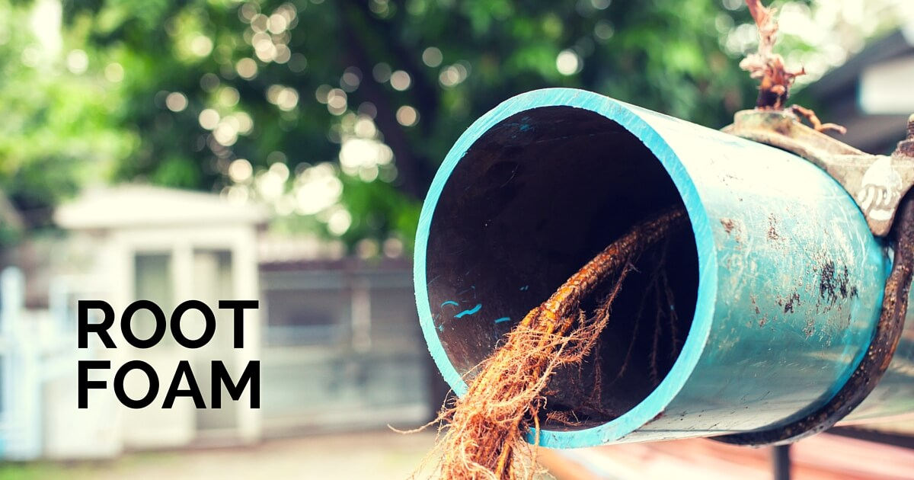
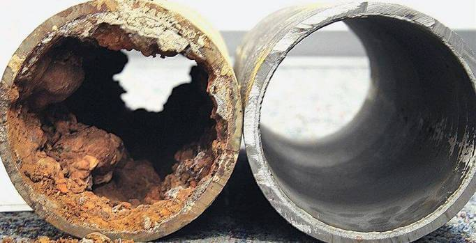

Drain & Sewer Line Cleaning
SCHEDULE YOUR DRAIN & SEWER LINE CLEANING TODAY
Drain Doctor LLC is a team of professional drain experts helping Fort Wayne homeowners and business owners restore their drain and sewer lines in the most efficient, cost-effective way possible. Stay proactive; avoid the mess by scheduling regular sewer line cleanings. Drain Doctor LLC offers the most affordable and professional drain and pipe cleaning services in Northeast Indiana. For an in-home or in-office consultation, call us at 260-557-3616 today!
HYDRO JET SEWER LINE CLEANING:
Our Main Approach to Residential & Commercial Drain Cleaning Services
Clean drains leading to clean sewer lines free of roots, waste, food and hair – which all tend to build up over the years – allow water to flow more efficiently. If the build up is not removed from your pipes, more problems are likely to occur and you may find yourself replacing your sewer line sooner than anticipated.
Whether you’re dealing with a small backup or emergency issue, our team of professional drain technicians are available to help you.
The sewer pipe running from your home or small business to a municipal sewer line or septic tank is the most important pipe that needs to function properly. Any form of blockage in this line – from tree roots and breaks to egg shells and grease – can cause a terribly messy backup. We clean your sewer lines using a method called hydro jetting.
WHY CHOOSE ROOTER AND HYDRO JETTING SERVICES OVER OTHER METHODS:
The sewer pipe running from your home or small business to a municipal sewer line or septic tank is the most important pipe that needs to function properly. Any form of blockage in this line – from tree roots and breaks to egg shells and grease – can cause a terribly messy backup.
Through our highly effective and efficient hydro jetting services, your sewer line blockage will be eliminated quickly.
Much easier than digging a sewer pipe out of the ground to unclog and repair it, and more environmentally friendly than commercial drain cleaning chemicals, hydro jetting services can blast away even the most difficult sewer line clog. Using highly-pressurized water to clear pipe blockages, learn more about how our hydro jetting services work:
- Hydro jetting drain cleaning involves a special nozzle that is connected to a pressure generating machine that shoots high-pressure water through your pipes.
- This high-pressure water cleans every inch of the sewer pipe, expelling the entire clog and ensuring that no debris is left.
- This cleaning process delivered through hydro jetting services provides a long-term solution. The water pressure prevents another clog from forming in the near future, as the scalding action doesn’t allow debris to build back up.
- Hydro jetting easily answers the question, “how often to clean a sewer line”: Hydro jetting drain cleaning allows you to go a few years before thinking about cleaning your drains and pipes again, where other methods require you to clean annually. This means hydro jetting services are extremely cost-effective.
- Hydro jetting services are environmentally friendly and exponentially safer compared to the store-bought chemical sewer cleaners.
- Hydro jetting is a well-known, cutting-edge solution. While hydro jetting is not an easy solution, there are some other very demanding sewer line cleaning methods that will leave you tired and with a job only partially done.
- With hydro jetting, the nozzle does it all. With the increased pressure, tree roots, food waste, large clogs, and grease buildup gets pushed apart and out.
RESIDENTIAL DRAIN CLEANING SERVICES
NEAR FORT WAYNE, IN
Drain Doctor LLC handles all drain cleaning problems – big and small, from removing a minor blockage to clearing tree roots from the sewer line. Instead of letting a clogged drain in your home cause you hours of frustrating troubleshooting, let our team of professional drain technicians clean it for you.
Serving all of Allen county, we are available to tackle your sewer and drain cleaning needs.
We provide residential drain cleaning services for just about every part of your home, including tree roots in your sewer line.
Kitchen Drains: With all the things going down your kitchen drain – grease, fats, egg shells, citrus peels, vegetable scraps, unwanted leftovers – it’s no wonder kitchen drains become clogged over time. If your kitchen sink is draining slowly or not at all, even after you’ve run the garbage disposal, you may have a clog somewhere along the line. A quick drain cleaning is most likely all you’ll need to solve the problem.
Bathroom Drains: Bathroom drains can be a challenge. Sink, shower and tub drains are constantly battling hair, toothpaste and soap scum buildup. If you’re starting to become frustrated by a slow bathroom drain, schedule a drain cleaning to restore proper flow.
Basement, Garage and other Floor Drains: Floor drains typically contain traps kept filled with water to prevent sewer gases, or strong odors, from escaping into your home. Because they’re on the floor, these types of drains and traps can easily become clogged with dirt, dust and other debris. If you’re experiencing a foul smell or notice even a small amount of water coming from the drain, consider scheduling a sewer line cleaning.
Exterior Drains: Your home may be outfitted with downspout drains to help direct water from your gutters away from your home. These downspouts are sometimes connected to municipal storm sewer systems. The pipes in this system may become clogged with leaves and other natural debris – including tree roots in the sewer line – and, unfortunately, if it’s on your property, it’s your problem – not the city’s. If you notice water in your basement or large puddles in your yard, you could have an exterior drainage issue. Start by scheduling a sewer line cleaning or a video pipe inspection to uncover the problem.
HOW TO CLEAR ROOTS FROM DRAIN PIPES
In many cases, your drains may be backed up because roots have worked their way into your main sewer line and are starting to trap waste. With tree roots in the sewer line and other debris in the way, waste water cannot flow evenly throughout the pipe.
Forget chemical methods of clearing tree roots from your lines – they’re too dangerous to use and they may not even get the entire rooted system. The most effective method of dealing with invasive tree roots – a method that can save you time and money in the end – is hydro jetting (or water jetting).
After a video pipe inspection to quickly and accurately identify where the roots are and how substantial the blockage is, the hydro jet will blast water into the sewer line and clear the obstructing roots.
This method should only ever be completed by a professional drain technician.
Our residential hydro jetting services, or drain and sewer line cleaning service, is highly effective at clearing tree roots from the sewer line, as well as other unwanted debris.
COMMERCIAL DRAIN CLEANING SERVICES NEAR Fort Wayne, IN
Most commercial drain problems result from the buildup of organic waste or the presence of foreign objects. Our professional drain technicians will identify exactly where and what the problem is and quickly solve your sewer or drain issue any time, day or night.
Video pipe inspections help us more quickly determine how to resolve your sewer or drain problem, and can lead to less invasive drain cleanings because we can directly target the area of your drainage system that’s clogged.
Root Foam
It’s no secret that one of the leading problems in sewer systems is root intrusion. It also happens to be one of the most costly problems that a property owner faces. Unfortunately, for both homeowners and property owners, tree roots prosper when inside of nutrient-filled sewers. When tree roots enter sewer spaces they infiltrate through pipes, which can cause serious backups.
When tree roots or any other type of plant matter is deemed the cause of a pipe clog or blockage, it is a warning sign that there is a hole or crack in the pipe. It is important to beware that any leak in a pipe will eventually cause root intrusion. Once the intrusion begins, what starts out as a minuscule root quickly turns into an arms-length size structure. Due to the biological configuration of drain water systems, tree roots are bound to rapidly expand, which can lead to irreversible pipe failure.

Choosing the Right Root Control
While traditional removal approaches, like mechanical cutting, provide temporary fixes that eventually lead to tree roots returning, our team at Drain Doctor LLC has The most effective preventative root treatment solution— RootX®. Our choice root treatment is an aquatic herbicide and root foaming technology that is non-fumigating and copper sulfate-free. RootX® will not damage your home’s pipes or sewer systems and is an environmentally conscious product . RootX® also does not harm trees or plants, it only kills the roots several inches from the pipe and does not have a negative effect on the tree.
Save Money
Our sewer and drain specialists at Drain Doctor LLC use RootX® because it is both effective in killing roots out of sewer lines and saving you money during the process. Because treating pipes with RootX® takes less time and does less damage than mechanical cutting, the result will last longer. Because cutting roots is also like pruning a tree, mechanical root cutting is almost like guaranteeing that the roots will grow back and the intrusion cycle will repeat itself. By having our specialists at Drain Doctor LLC annually apply RootX® to your pipes, not only you will be saving yourself a lot of money, but you will also be sparing yourself a lot of unnecessary stress.
Act Quickly
RootX® can kill root within the first hour of application! It is an immediate pipe blockage and clogging problem solver. RootX foams to engulf the entire pipe, which is important because root growth occurs at the top of the pipe. Other products just flow down the pipe, only killing a small portion of the root problem. Due to its fast acting nature, RootX® foam will dissipate in about 15 minutes post application.
High Speed Milling
High-speed milling, which is also known as flex-shaft technology, is an innovative drain cleaning equipment that is different from a traditional drain snaking. Drain snakes are commonly used for dislodging blockages, whereas the high-speed milling cables have specialized cutter heads (known as chain-knockers) to clean and polish the interior of the pipe. Milling is used for fast and efficient drain cleaning, including soft blockages, scale & calcium buildup, and tree roots, as well as other imperfections in the pipe. We use our milling equipment to gently grind away buildup commonly found inside older, heavily corroded, cast iron pipes. If appropriately used in conjunction with our video and water jetting equipment, we can remove scale and buildup effectively without causing additional damage to the pipe. It’s an excellent way to get your pipes working at their best, so be sure to contact Drain Doctor LLC to find out if you’re a candidate for this rehabilitation service.

Contact Us Today
The Drain Doctor LLC team of sewer and drain specialists use root foam solutions that will help you easily restore your pipe flow capacity and kill tree roots, all while avoiding costly repairs. If you are in need of root foam treatment, reach out to our team to learn more about what we can do for you. Contact us at 260-557-3616 or reach out to us via email at info@calldraindoctor.com
What drain cleaning service does your business need?
Sewer Drain Cleaning:
- Slow draining sinks and drains in and around your building is a sure sign you have a sewer drain issue. The most common cause of commercial sewer drain backups is the buildup of dirt and debris.
- Instead of wasting your valuable time trying to pinpoint the exact cause and unclogging your lines, contact our team of expert sewer drain cleaning technicians. We work fast and smart to identify and address the problem, so you don’t have to worry about business down time.
Commercial Industries We Serve:
- Hospitality
- Food Service
- Healthcare
- Professional Services
- Property Management
- Schools
- Retail
- and more!
SEWER LINE & DRAIN CLEANING FAQS
If after numerous attempts at unclogging your sink or drain – utilizing home remedies and tools like a plunger, drain snake, or auger – and your clog still persists, it could be because it is severe and/or too far from the opening or fixture. In either case, your drainpipe will need to be cleared.
The best and safest way to get this done is by contacting an experienced drain cleaning technician.
We do not advise the use of chemical solutions, as they don’t always solve the problem and they’re dangerous to people, your pipes, and the environment.
Solving the riddle of how to clear a main sewer line clog is never fun, but it must be done quickly and accurately to minimize property damage and costs.
While there are numerous resources to help you understand your issue and offer suggestions on how to unclog it, sewer line backups can be complex in nature and stem from various causes.
Because of this, a drain cleaning technician with the ability to assess your clog via video pipe inspection can quickly and effectively identify the issue and enact the best unclogging solution right away. This will minimize your time and overall costs. Additionally, a drain technician can ensure that there are no major, hidden issues lurking in your plumbing system that is causing this issue and could cause a much bigger issue down the line.
As a rule of thumb to be proactive and ensure prevention, your sewer lines should be cleaned every 8-12 months. Of course, if you experience an issue before your next routine drain cleaning service, contacting a drain technician will help you quickly tackle the spontaneous issue.
As one of the most effective and widely used sewer and drain cleaning methods, jet cleaning sewer lines (or hydro jetting sewer lines) is where extremely high-pressure water is pushed through your plumbing or sewer lines to obliterate the blockage.
If you still have questions or concerns, give us a call today at 260-557-3616. We’re available to help your home or business.